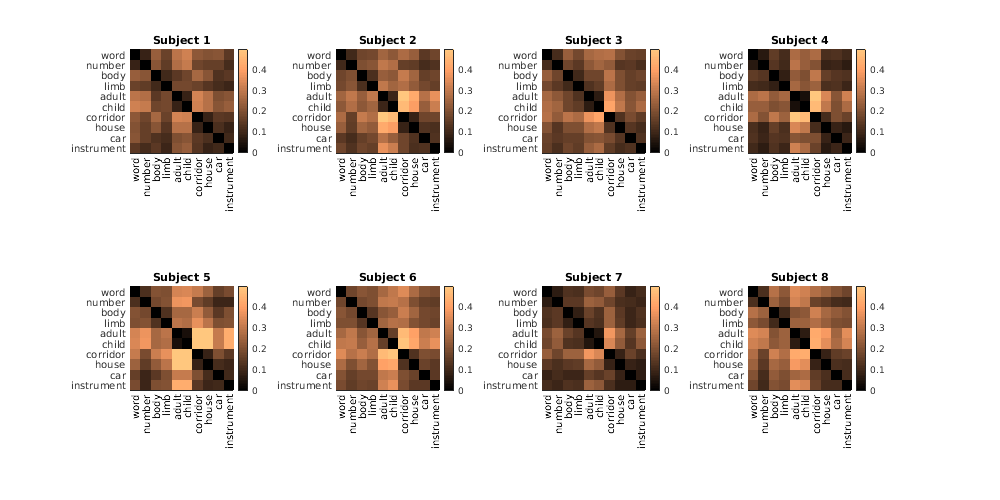

Example 11: Representational similarity analysis
Contents
Introduction
% In this script, we provide a simple example of performing % representational similarity analysis. We actually do this % not on the core NSD data but on the category-localizer floc % experiment that was also conducted in the NSD subjects. % % Skills/concepts: % - Creating representational dissimilarity matrices
Load data
% load the names of the categories used in the floc experiment catlabels = importdata('~/nsd/nsddata/experiments/floc/categories.tsv'); % load in floc betas from a ventral temporal cortex ROI betas = {}; for subjix=1:8 % load in the visualsulc atlas roi1 = load_untouch_nii(sprintf('~/nsd/nsddata/ppdata/subj%02d/func1pt8mm/roi/visualsulc.nii.gz',subjix)); % load in the floc betas (the 60 betas are ordered as 6 condition-splits * 10 categories) a1 = load_untouch_nii(sprintf('~/nsd/nsddata/ppdata/subj%02d/func1pt8mm/floc_betas.nii.gz',subjix)); % extract data for voxels within the union of OTS, FG, mFus, CoS betas{subjix} = subscript(squish(a1.img,3),{find(ismember(roi1.img,[1 3 4 6])) ':'}); % voxels x betas end betas
betas =
1x8 cell array
Columns 1 through 3
{3863x60 single} {4432x60 single} {4253x60 single}
Columns 4 through 6
{3868x60 single} {3325x60 single} {5061x60 single}
Columns 7 through 8
{3289x60 single} {4275x60 single}
Construct RDMs (representational dissimilarity matrices)
% do it cmatrix = []; % 10 x 10 x subjects, values are in [0,2] for subjix=1:8 % average across condition-splits temp = squish(mean(reshape(betas{subjix},[],6,10),2),2); % voxels x 10 categories % calculate pairwise correlations of activity patterns and subtract from 1 cmatrix(:,:,subjix) = 1-calcconfusionmatrix(temp,[],2); end
Visualize results
% plot figureprep([100 100 1000 500],1); for subjix=1:8 subplot(2,4,subjix); hold on; imagesc(cmatrix(:,:,subjix),[0 0.5]); colormap(copper); colorbar; axis image tight; set(gca,'YDir','reverse'); set(gca,'YTick',1:10,'YTickLabel',catlabels); set(gca,'XTick',1:10,'XTickLabel',catlabels); xticklabel_rotate; title(sprintf('Subject %d',subjix)); end
% Note that results will vary depending on the units of the data and the % choice of similarity metric. In the above example, we used the % beta weights as given in units of percent BOLD signal change and % used one minus Pearson's correlation as the measure of dissimilarity. % One might consider other similarity metrics and/or normalization of the % data prior to RDM construction (e.g. mean-subtraction or z-scoring % of voxel responses or activity patterns). Caution should be exercised % to ensure proper intepretation of results.